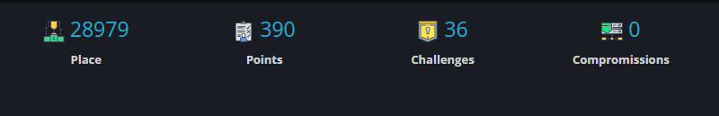

Etudiant en informatique
J'ai obtenu un bac général au Lycée jean bodin spécialité Mathématiques & Numérique et Sciences de l'Informatique option Mathématiques Expertes.
A présent je suis au lycée Chevrolier pour effectuer un BTS SIO. Afin de poursuivre en école d'ingénieur, je suis en parallèle des Sessions de formation BTS-PREPA à l'ESAIP pendant mes vacances scolaires.
J'ai pratiqué 5 ans de Tennis et remporté un tournoi puis pratiqué du football, futsall, ou encore judo.
La Cybersécurité est un des bloc de l'enseignement et surtout une pratique important dans la vie d'un informaticien.
Pour cela, j'utilise Root-me, c'est une plateforme d'apprentissage à la sécurité informatique et au hacking. L'apprentissage se fait sous la forme de défis/challenges, on peut donc y connaître ses compétences et ses points faibles.
et voici le nombre de points que je possède (actualisé régulièrement):

L'informatique étant une matière en perpétuelle évolution. Je me tiens à jour avec des outils informatique tel que Feedly qui récupère par les flux rss le contenu que je souhaite regarder. Je m'informe principalement par le biais de contenu sur la platforme youtube.
La documentation, permet d'augmenter le savoir collectif de tous ceux avec qui vous travaillez. Elle est donc un moyen de se faire comprendre en équipe, en groupe ...
Lors d'un projet, j'ai dû réaliser plusieurs cahiers de recettes sur la mise en place d'un cloud (Nextcloud).
voici donc les documents réalisés :